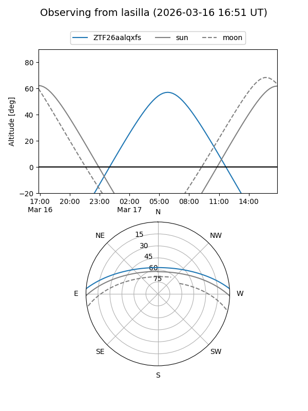
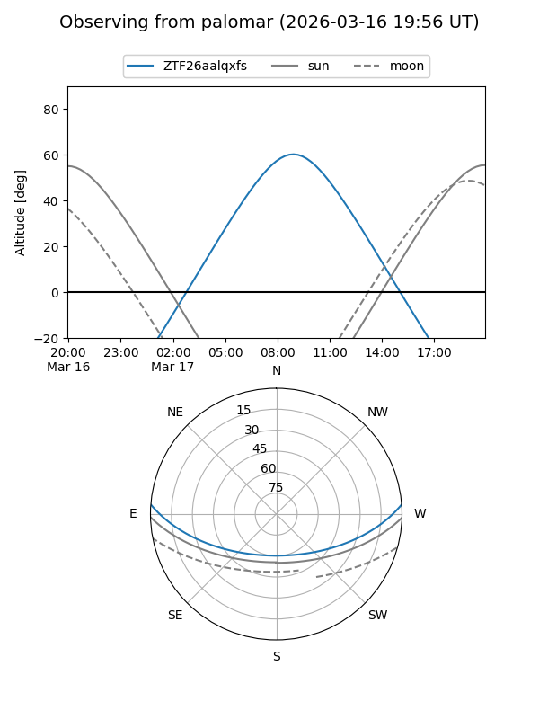

ZTF26aalqxfs
Target ZTF26aalqxfs at 2026-03-17 11:05
Aliases and brokers:
FINK: link
Lasair: link
ALeRCE: link
alt names
ZTF26aalqxfs (ztf,fink_ztf)
Coordinates:
equatorial (ra, dec) = 191.4684,+3.77017
equatorial (HMS+DMS) = 12:45:52.41,+03:46:12.61
galactic (l, b) = (299.4344,+66.60412)
Flags:
Photometry:
last ztfg=20.02
1 ztfg detections
Lightcurve
Visibility


Additional plots